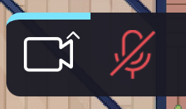
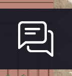
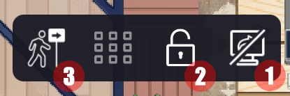

Bienvenue dans la découverte du monde virtuel
Le éléments du menu
Vous disposez d'un menu qui vous permet de contrôler un certain nombre de choses.

Activer / désactiver votre micro ou votre caméra

Accéder au chat et discuter par message texte avec vos interlocuteurs

Lorsqu'une conversation vocale a débuté, vous pourrez :
1. Partager votre écran
2. Verrouiller la conversation
3. Suivre l'utilisateur dans ces déplacements